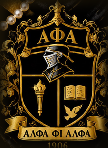

Celebrate the Wins
Awards and Recognition
D9Legacy awards for the people building our chapters - and the real honors the Divine Nine inspires.
The D9Legacy Wall
Our Awards
These D9Legacy awards are pretend fun for our chapters. The real Divine Nine organizations have their own real awards and honors.

First Member Ever
Awarded to
Ahriyah Moore
The very first person accepted into a D9Legacy chapter - Alpha Kappa Alpha's Alpha Rho chapter. Her nickname is Pink Ivy.

Founder's Crown
Awarded to
Josh (Joshua Samuel)
Founded all of D9Legacy in 2026 and built nine chapter sites. Owner & President of Alpha Phi Alpha.
Chapter Builder
Awarded to
Jaylee D. Strong
Founded the AKA Alpha Rho chapter and became its first Owner & Basileus.

Torch Bearer
Awarded to
Kinte (King Murry)
Owner of the Delta Sigma Theta chapter, carrying the torch of wisdom.

Diamond Standard
Awarded to
Christopher "CJ" Smith
Owner of the Kappa Alpha Psi Kappa Nu chapter - achievement in every field.

Golden Poodle Award
Awarded to
Ivory Cooper
Owner of the Sigma Gamma Rho Sigma Rho chapter - greater service, greater progress.
Rising Member
Awarded to
Ava Owens
Joined the AKA Alpha Rho chapter and jumped right in.
Want to earn one?
Join a chapter, show up for service days, be kind, and represent your org well. Owners hand out new awards as chapters grow. You can also make your own certificate on the Certificates page!